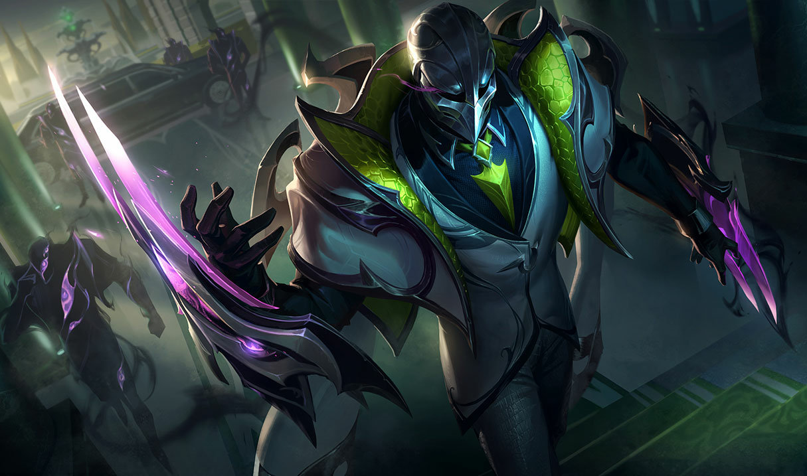

What causes humans to be appealing to Gods? Their false display of perfection. In their history, many authority figures claimed to be like the divine, dissolving their fragile world into ash left behind by conflict. To believe that humans could ever accomplish such a feat is amusing. If only I, Umbra, could lay waste to my godly counterparts and shift humanity’s hourglass into my favor. I shall present to them what it means to be a perfect being and then reset humanity. Currently, the average human has appeared to regress in terms of their mental capacity, gluing their eyes to screens and watching, for example, Tiktok. A perfect being has no need for such sensual stimulation. That is what I would say if it weren’t for my kinsman, Mattis, employing a life of decadence and bodily pleasures. He sits with these creatures and dines with them, like a pig drowning in manure and roundworms. What stops me from accomplishing my goals? These infernal chains, shackling my dark form with the pain of a thousand suns, but it serves as a reminder of my destiny and humanity’s destiny. Blinded by this hatred, how could my current purpose be anything, but... dark? Through my purpose, I am called to war to prevent humans from robbing us of our nobility. I may be damned, yet these humans intentionally crawl into their eternal inferno.
The din of fire alarms covered the entire campus with panic and disarray. Students could be seen fleeing the rooms and halls as any person would in that situation. A few of the college teachers and staff members made sure that everyone was out of every building. The distinctive smell of smoke ran through Matthew Inganno’s nostrils, offering the idea of a Summer BBQ gone wrong. One foolish, yet flamboyant student braved the storm of chimes, to film a ridiculous Tiktok stunt. He jaunted around the lockers, oblivious to the banshee-like screams of the fire alarms’ rings. With no one in sight, he spoke into the phone, reciting a turkey-influenced giggle in an interval of three seconds. Teachers and staff alike approached the party animal. Enraged by his audacity, one of the teachers accused the student of starting the entire fire incident. A shocked look came upon the young lad’s face. There was nothing that he could mutter to excuse himself from this predicament. This imprudent boy is named Peter Pickle. In relation to Matthew, they were both enemies/roommates, according to Matthew. In fact, the perpetrator of the scene was Matthew, who had the innovation and knowledge to formulate this devious plan to incriminate Peter. First, he engineered an ant-like drone to flick the alarm system near Peter’s position, utilizing an actual ant’s strength. Second, he dropped recently lit cigarettes inside an area of the ventilation shaft where any substance or gas can spread throughout the school.